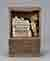

모두가 웃는 웹 'web for all' 본사이트는 서울시립미술관 커미션으로 제작한 정혜윤의 작업입니다.
모두가 웃는 웹(web for all)
-
한애규 장롱 속의 여인
작품 정보
- 제작연도
- 2004(2019 재제작)
- 재료/기법
- 피그먼트 프린트
- 작품규격
- 125×100cm(×8개)
- 액자규격
- 정보없음
- 부문
- 사진
- 관리번호
- 2020-213
- 전시상태
- 비전시
- 관리번호
- 2020-213
작가 및 작품설명
한애규(1953- )는 1977년 서울대학교 응용미술학과를 졸업하고, 1980년 동 대학원에서 도예 전공으로 석사학위를 받았으며, 1986년 프랑스 앙굴렘 미술학교(Angouleme-Poitiers: Ecole europeenne superieure de l'image, EESI)를 졸업했다. 1984년 롯데화랑(서울), 1987년 그림마당 민(서울), 1989년 온다라미술관(전주), 1999년 갤러리 헬호프(Galerie Hellhof, 프랑크푸르트, 독일), 2003년 갤러리 하나(Galerie Hana, 크론베르크, 독일), 2005년 《침묵》(인사아트센터, 서울), 2008년 《꽃을 든 사람》(가나아트센터, 서울), 2015년 《푸른 그림자》(갤러리 아트사이드, 서울), 2017년 《여행이란 이름의 사색의 시간》(이상원미술관, 춘천) 등 개인전을 열었다. 단체전에는 1995년 《광주 5월의 정신》(광주시립미술관, 광주), 2000년 《일상·삶·미술》(대전시립미술관, 대전), 2001년 《1980년대 리얼리즘과 그 시대》(가나아트센터, 서울), 2007년 《흙, 그 물질적 상상력》(김종영미술관, 서울), 2013년 《우리들의 이야기》(두원아트센터, 부산), 2016년 《앤솔러지》(서울시립미술관, 서울) 등에 참여했다. 저서로 『여행이란 이름의 사색의 시간』(2015)이 있으며, 전주 기전여자전문대학교(현 전주기전대학)의 전임교수로 재직한 바 있다.
한애규는 1970년대 말 도자기의 기능적인 측면에 서술적인 표현을 결합하는 도예작업을 전개했으나, 1987년경부터 테라코타를 작품의 재료로 삼으면서 독립된 예술작품의 창작으로 나아갔다. 인간의 삶을 지긋하고 여유로운 시선으로 바라보는 작가는 흙을 통해 일상의 리얼리티를 재현하고 환경과 상황에 따라 재정의되는 다채로운 여성의 삶을 조형화한다. 흙이라는 소재가 가지는 자연스러움과 친근함, 가변적인 특성은 자신의 이야기를 작품 속에 담담하게 담아내는 한애규의 작업 태도와 닮아있다. 이러한 특성은 1989년 전주 온다라미술관에서 개최한 개인전에서부터 본격적으로 나타나기 시작하는데, 가나아트 컬렉션에 소장된 1989년 작 <장롱 속의 여인>, <김치담기>, <분출>, <집을 점령한 여인>은 모두 이 전시에 출품되었던 작품들로 한애규의 초기 대표작에 해당한다. 그녀의 작업은 여성성과 여성문제에 관한 주제로 내면화된 자신의 상태를 표현하던 초기 단계를 거쳐 동생의 갑작스런 죽음으로 겪은 고통으로 작업한 <침묵> 시리즈, 개인적 관심사를 형상화한 <꿈>, <신화> 시리즈 등으로 확장되어가고 있다. <장롱 속의 여인>(1989)은 한애규의 어린 시절 경험에 기초하여 제작한 작품이다. 이불이 차곡하게 포개진 장롱 안에 한 여인이 눈을 감고 앉아있다. “어렸을 때 동생들하고 집에서 술래잡기를 하면 장롱에 숨고 그랬거든요. 그런데 장롱에 들어가서 숨고 나를 찾을 때까지 기다리는 그 순간에 그 안에서 느꼈던 행복감이 있어요. 이불 냄새도 좋고, 포근하잖아요?" 이 같은 작가의 회고에 등장하는 것은 어린 아이이지만, 작품에는 삶에 지친 기색이 깃든 여인의 모습으로 등장한다. 어린 시절의 마음 안으로 들어가 앉아 있는 여인은 어머니의 자궁과 같이 따뜻하고 작은 공간 속에서 고단한 삶을 위로받듯이 편안한 얼굴로 쉼을 청하며 행복을 느끼고 있다. * 작품이미지를 무단 복제 또는 상업적으로 활용하실 수 없으며, 무단으로 사용하실 경우 저작권법에 따라 처벌 받으실 수 있습니다.공지사항
-
- 제목
- LOADING
- -
오시는길
-
- 서소문본관
- 서울 중구 덕수궁길 61 (서소문동)
-
- 북서울미술관
- 서울 노원구 동일로 1238 (중계동)
-
- 남서울미술관
- 서울 관악구 남부순환로 2076 (남현동)
-
- 난지미술창작스튜디오
- 서울 마포구 하늘공원로 108-1 (상암동)
-
- SeMA창고
- 서울 은평구 통일로 684 (서울혁신파크 5동)
-
- 백남준기념관
- 서울 종로구 종로53길 12-1 (창신동)
-
- SeMA벙커
- 서울 영등포구 여의대로 지하 76 (여의도동)